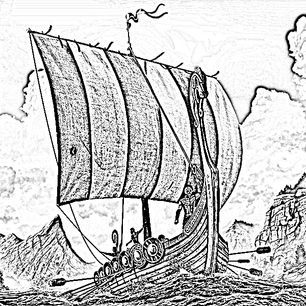

Welcome to Fimbulmatr! The name Fimbulmatr translates to "The Great Feast" in Old Norse, reflecting our mission to bring the grand and hearty flavors of Viking-era cuisine to your kitchen.
At Fimbulmatr, we are dedicated to exploring and celebrating the traditional recipes that were a staple for the legendary Norsemen. Our goal is to connect you with the culinary heritage of the Vikings, offering authentic and delicious recipes that capture the essence of their rich and robust dining traditions.
Join us on this culinary journey as we delve into the foods that shaped a legendary era and bring a touch of Viking history to your modern table.
Our journey began with a fascination for the Viking era—a time of exploration, bravery, and culinary innovation. Inspired by The Odin Project's first HTML project, we set out to combine our love for historical cuisine with the skills we acquired in web development. This project allowed us to delve into the heart of Norse cuisine and share it with enthusiasts like you. Through meticulous research and a love for authentic flavors, we've recreated time-honored recipes that embody the spirit of the Vikings.
On our site, you’ll find a variety of recipes that highlight the staples of Viking cuisine, from hearty stews and fire-roasted meats to sweet, honey-glazed treats. Each dish is crafted with historical accuracy and a touch of modern flair, designed to transport you to the era of fierce warriors and grand feasts.
The Vikings were more than just formidable warriors—they were also skilled cooks and resourceful food preservers. Their diet was shaped by their environment, relying on what was available from the land and sea. Our recipes honor their ingenuity and celebrate the simplicity and strength of their food.
We invite you to explore our recipes, learn about Viking traditions, and embrace the flavors of a bygone era. Whether you're hosting a themed dinner or simply looking to try something new, our recipes are here to bring a taste of Viking history to your table.
Thank you for visiting Fimbulmatr. We hope you enjoy the journey through Norse cuisine as much as we do!